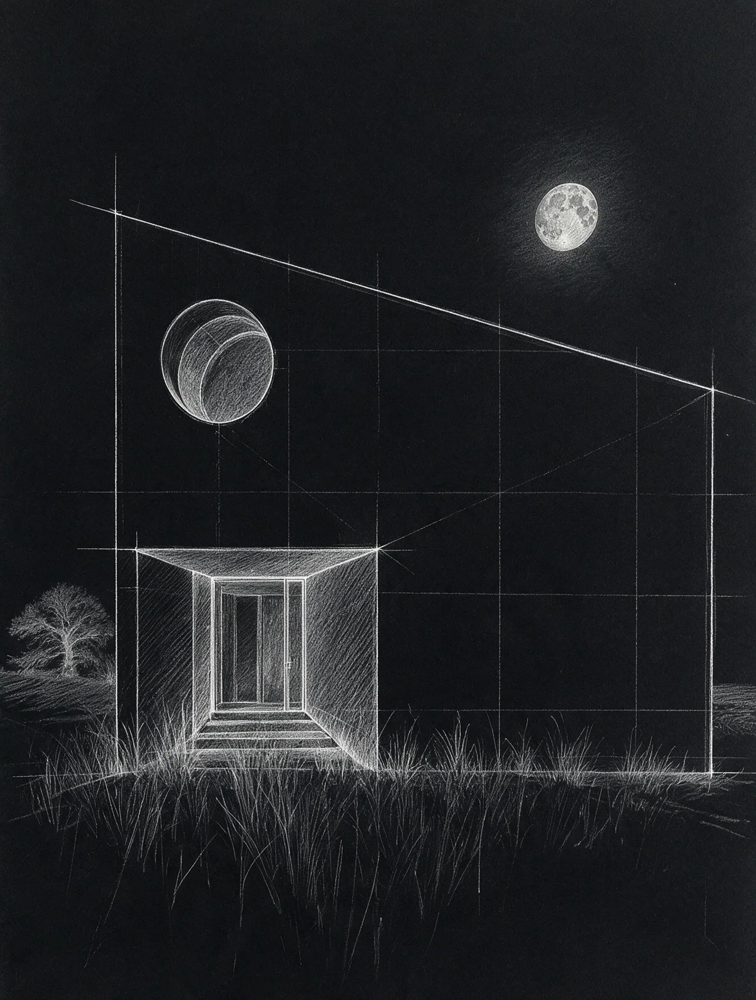
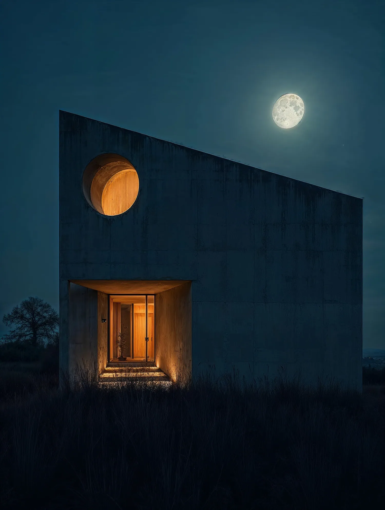

The STORY of SHENKEN


( Move your light across the drawing )
( From the founder )
“Concrete remembers everything: the hand that poured it, the timber that shaped it, the rain that stained it. At night, it remembers the light.”
- 0Years
- 0Buildings
- 0Countries
- 0m³ of concrete